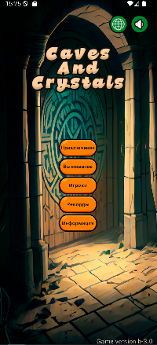
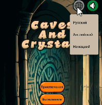

SpiritualAdviser
Цель этого проекта написать простую логическую игру без рекламы,
ориентированную на среднестатистического игрока.

Он состоит из блока навигационных кнопок, логотипа игры, главных кнопок и версии приложения.
Для навигации использую navigation compose.
В игре есть 2 игровых режима.
Приключения - режим где необходимо открыть 200 свитков, каждый свиток это отдельный уровень.
Выживание - режим бесконечной игры с постепенным усложнением логики.
В игре можно создавать игроков, есть таблица рекордов.
Ui написан на фреймворке Compose.
Игра поддерживает поворот экрана.

Кнопки звука и смены языка игры сделаны компонентом IconToggleButton.
Основной блок кнопок сделан компонентами IconButtons.